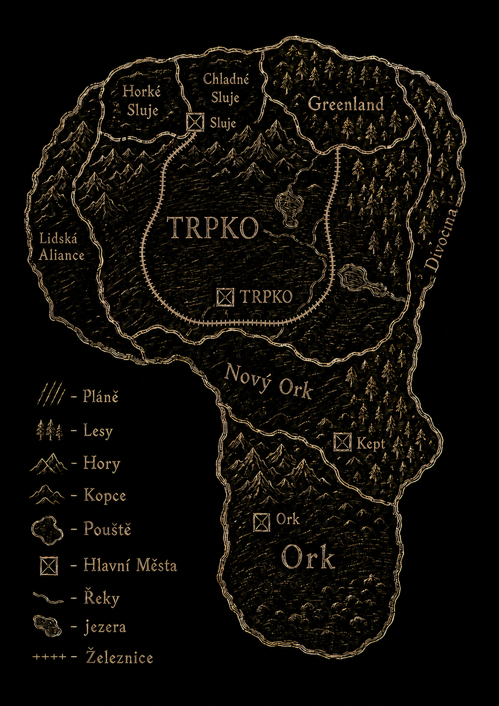

Čtyřstěn
Prakontinent a dávné časy
Mjer byl původně žhavý čtyřstěn z lávy a kamení. Po jeho ochlazení vznikl život, ale bez hvězdy svět pomalu umíral. Největší mág proto vytvořil hvězdu Xrelfi, za cenu vlastního života i první civilizace. Její gravitace roztrhla prakontinent na čtyři části.
Algoda
Algoda je největší a nejlidnatější kontinent Mjeru. Žijí zde téměř všechny známé rasy a nachází se zde většina království i měst. Právě zde se odehrává většina moderních dějin, válek, obchodních sporů i dobrodružství.
Kontinent X
Kontinent X pokrývá nekonečný prales a téměř nikdo zde trvale nežije. Dobrodruzi zde ukrývají poklady, které jiní dobrodruzi neustále hledají. Domov zde mají hlavně skřeti, kteří věří, že právě odsud pochází a že písmeno X oplývá magickou mocí.
Temný kontinent
Temný kontinent leží na spodní straně Mjeru, kde nikdy nesvítí Xrelfi. Díky tomu zde přetrvala prastará magie. Obývají jej temní elfové, Gnakové, Temnojedi a Frakilové. Žádná výprava se odtud nikdy nevrátila, takže o něm víme jen velmi málo.
Státy Algody
Org
Org je domovem orků, kteří znají jediné slovo – „org“. Přesto jím dokážou vyjádřit vše potřebné. Většina jejich rozhovorů proto končí rvačkou. Díky neustálým soubojům jsou téměř odolní vůči jakémukoli násilí.
Nový Org
Nový Org založili orkové, kteří usoudili, že neustálé bitky nejsou nejlepší způsob života. Začali se učit obecnou řeč a snaží se žít klidněji. Přesto v nich stále zůstává typická orčí výbušnost.
Lidská aliance
Lidská aliance je svaz mnoha malých států. Lidé si chrání své území a cizince příliš nevítají. Přestože jsou početní, jejich vojenská síla není velká, a proto mají na dění na Algodě jen omezený vliv.
Divočina
Divočina leží nejblíže Kontinentu X, a proto neustále čelí nájezdům skřetů. Vesnice zde často hoří a obyvatelé jen stěží přežívají. Jen málokdo je ochoten nazývat toto nebezpečné území svým domovem.
Greenland
Elfové z Greenlandu jsou kočovní pastevci sobů. Přestože ovládají silnou magii, dávají přednost jednoduchému životu v přírodě. Cizinci je často přirovnávají k indiánům, což elfové většinou považují za lichotku.
Horké a Chladné sluje
Dvě trpasličí království spolu od nepaměti soupeří o vládu nad všemi trpaslíky. Jejich největší spor spočívá ve vzhledu přileb. Horké sluje dávají přednost zlatému obočí, zatímco Chladné sluje považují tento styl za nevkus.
TRPKO
TRPKO je nejmocnější království Algody. Sir Trol Teodor jej osvobodil od tyranie a vybudoval prosperující říši na úkor okolních zemí. Po fingované smrti předal vládu skřítku Daliborovi, který záhadně zmizel beze stopy.
